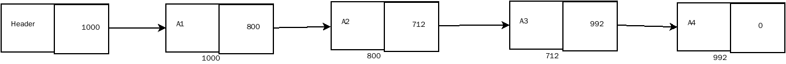
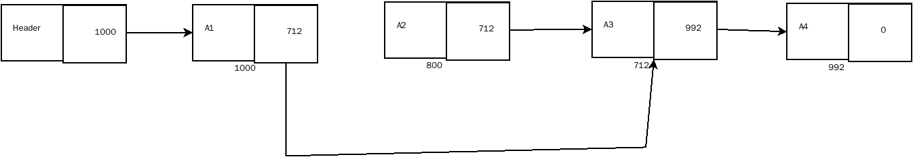
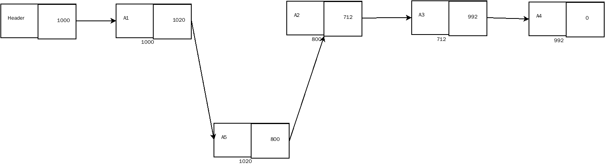

链表由一系列不必在内存中相连的结构组成，每一个结构单元均含有表元素和指向包含该元素后继元素的结构的指针
如图所示

链表可以有两种表现形式，一种是带有头节点的链表(如上图所示)，另一种是不带有头节点的链表，一般来说带有头节点的链表很多时候处理起来比不带头节点的方便，因此这里选择带有头节点的链表展示
链表定义如下:
//头文件中定义
struct Node;
typedef struct Node *PtrToNode;
typedef PtrToNode List;
typedef PtrToNode Position;
typedef struct ElementType ElementType;
List MakeEmpty(List L);
int IsEmpty(List L);
int IsLast(Position P,List L);
Position Find(ElementType X,List L);
void Delete(ElementType X,List L);
Position FindPrevious(ElementType X,List L);
void Insert(ElementType X,List L,Position P);
void DeleteList(List L);
Position Header(List L);
Position First(List L);
void printList(List L);
//在具体的实现文件中定义每个节点中的数据，这里选择int类型的数据
struct ElementType{
int data;
};
struct Node{
ElementType Element;
Position Next;
};
主要功能实现
链表中稍微复杂的功能主要集中在删除和插入操作，删除和插入功能主要涉及到链表指针的移动以及内存的分配和释放

当链表删除时，就需要调整指针，将删除节点的前驱节点的后继指针指向删除节点的后继节点，并释放删除节点所占用的内存空间

当链表插入元素时，需要分配内存空间，创建一个新的节点，并将指定节点的后继指针指向新增节点，再把新增节点的后继指针指向原来指定节点的后继节点
链表插入操作实现代码
void Insert(ElementType X,List L,Position P){
Position ptr ;
ptr = (Position)malloc(sizeof(struct Node));
if(ptr == NULL) exit(0);
ptr->Element = X;
ptr->Next = P->Next;
P->Next = ptr;
}
链表删除操作实现代码
void DeleteList(List L){
if(L == NULL || L->Next == NULL) return;
Position ptr = NULL;
Position temp = NULL;
ptr = L->Next;
L->Next = NULL;
while(ptr != NULL){
temp = ptr;
ptr = ptr->Next;
temp->Next = NULL;
free(temp);
}
}